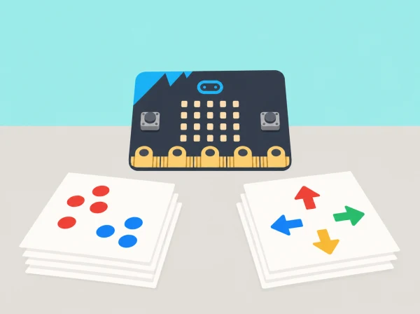

Una exposició local de ciència prepara una demostració sobre com les màquines classifiquen exemples. L’alumnat diferencia automatització i IA, ordena dades i usa micro:bit CreateAI per entrenar i provar un model senzill amb moviments del dispositiu. L’objectiu és entendre dades, etiquetes i límits; no es tracta de construir una aplicació per avaluar persones.
Les dues sessions es poden fer amb targetes i exemples de tecnologia, sense dispositius ni connexió. Per a continuar amb les sessions pràctiques del curs complet, useu CreateAI en navegador Chrome o Edge amb Bluetooth habilitat, o l’app oficial compatible en tauleta, i una placa micro:bit per a recollir dades. La V2 és necessària per executar després el model amb MakeCode sobre la placa. Comproveu l’accés del centre abans de planificar aquesta extensió.
Useu el moviment d’un objecte o de la placa i no captureu imatges, veu, noms ni perfils. Els projectes CreateAI es guarden al dispositiu o navegador; descarregar un fitxer HEX pot incloure les dades, el model i el codi, de manera que el docent decideix com es conserva i s’esborra. La participació corporal és voluntària i es pot substituir per un dispositiu sobre una maqueta. No useu el resultat per classificar habilitats o salut.
Recolliu una definició d’IA en paraules pròpies, classificació de targetes, diagrama d’etiquetes i taula de proves amb casos nous, resultat correcte o erroni i possible explicació. Valoreu si l’equip reconeix el paper de les persones que trien categories i dades i descriu incertesa sense antropomorfitzar el model.
Aquesta situació adapta les dues lliçons de micro:bit CreateAI taster lessons: Introduction to AI i Introduction to machine learning. Les categories, els exemples i la prova de moviments són propis; el contingut cobreix definicions, entrenament, prova i límits d’un model.